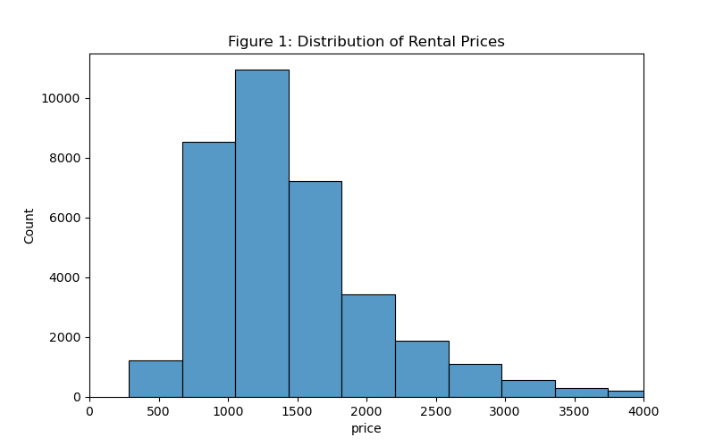
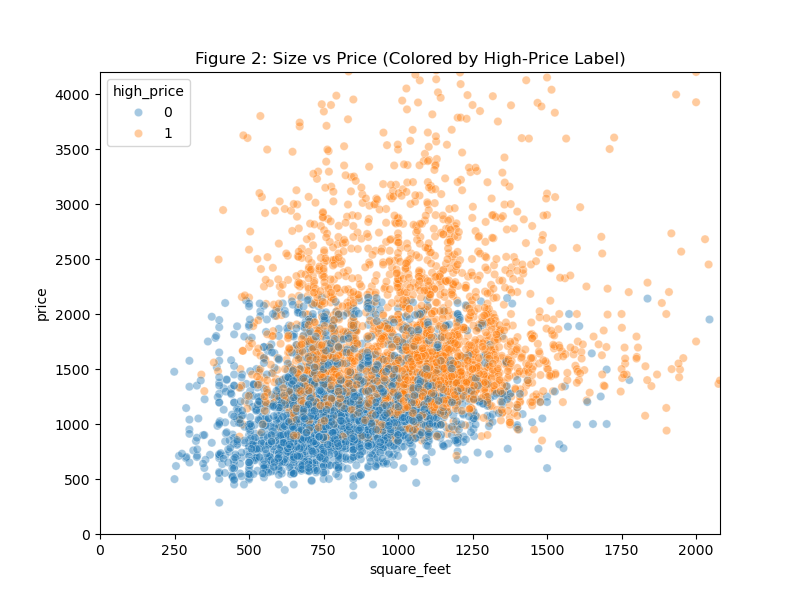
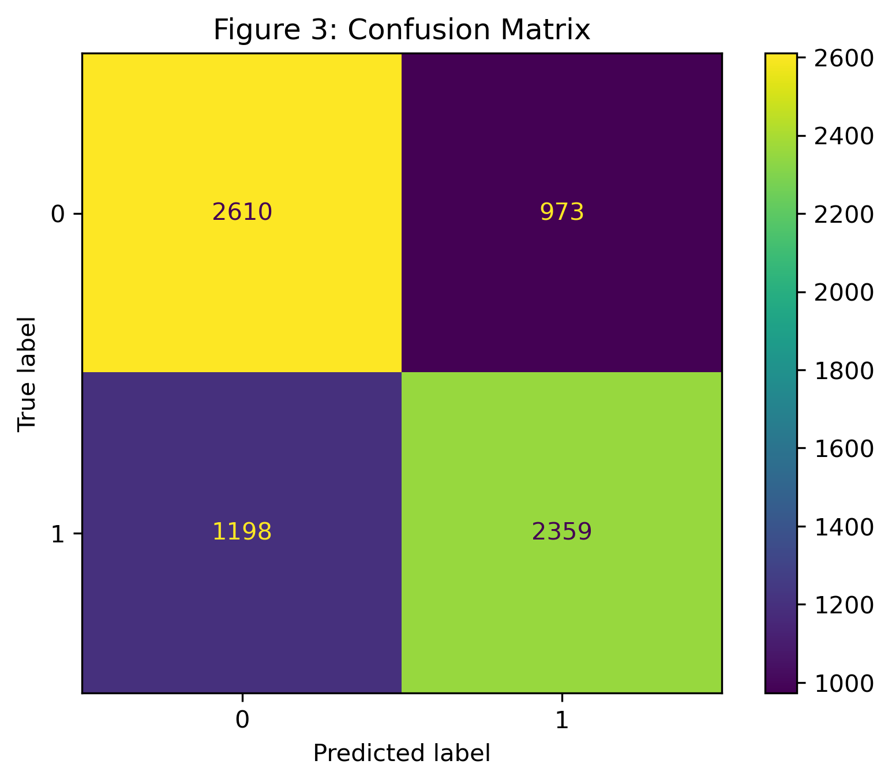

| price | square_feet | bathrooms | bedrooms | state | pets_allowed | fee | has_photo | state_median_price | high_price | |
|---|---|---|---|---|---|---|---|---|---|---|
| 0 | 2195.0 | 542.0 | 1.0 | 1.0 | CA | Cats | No | Thumbnail | 2195.0 | 0 |
| 1 | 1250.0 | 1500.0 | 1.5 | 3.0 | VA | Cats,Dogs | No | Thumbnail | 1420.0 | 0 |
| 2 | 1600.0 | 820.0 | 1.0 | 2.0 | CA | Cats,Dogs | No | Thumbnail | 2195.0 | 0 |
| 3 | 975.0 | 624.0 | 1.0 | 1.0 | NM | Cats,Dogs | No | Thumbnail | 1012.5 | 0 |
| 4 | 1250.0 | 965.0 | 1.5 | 2.0 | NM | Cats,Dogs | No | Thumbnail | 1012.5 | 1 |
Predicting High-Priced Rental Apartments in the USA
Milestone 1 – Group_26
Summary
This project investigates whether it is possible to predict when an apartment listing in the United States is high-priced relative to other listings in the same state. Using the Apartment for Rent Classified dataset from the UCI Machine Learning Repository, we defined a binary target indicating whether each listing’s price was above the state-level median. We developed a logistic regression model to classify listings as either high-priced or not. The final classifier achieved an accuracy of 0.7 on unseen data, indicating that it correctly predicts a listing as high-priced in most cases.
The notebook includes: - Data loading from the web
- Data cleaning and wrangling
- Exploratory data analysis
- Visualizations
- Classification modeling
- Results, discussion, and conclusions
Introduction
Homeownership in the United States has become somewhat less attainable for many Americans due to increasing housing prices, rising mortage rates and other increases in the cost of living. As a result, according to recent surveys, around 84% of Gen Z adults report delaying major life milestones in order to afford a home, with many turning to long-term renting instead (Investopedia 2023). Nearly 75% of Gen Z say they prefer renting to owning, which is important to note as this generation represents more than 20% of the U.S. population (Newsweek 2023). Growing rental demand is driving new construction as developers across the country are expected to add more than 500,000 new apartment units across the country (PR Newswire 2023).
These trends lead us to wonder if apartment rental prices vary dramatically across the U.S. A price considered as “expensive” in Texas may be considered “cheap” in New York. As many Gen Z adults are relocating to higher-cost states and more than 75% of them rent, understanding these price differences is increasingly important. Additionally, rental prices are influenced by a variety of listing features. For example, apartments with more bedrooms or bathrooms are generally associated with higher-prices. Other features such as whether pets are allowed or whether the apartment includes additional fees, may also signal higher quality or prices. These features will be incorporated into our model to assess their impact on whether an apartment is classified as high-priced or not. To create a meaningful comparison across regions, we evaluated whether each apartment is high-priced relative to the median rent within its own state.
Research Question
Can a machine learning algorithm accurately predict whether an apartment listing is high-priced relative to the median rental price in its state, using features such as square footage, number of bedrooms and bathrooms, and various listing attributes?
Dataset
We use the Apartment for Rent Classified dataset from the UCI Machine Learning Repository (UCI Machine Learning Repository, n.d.). The dataset contains: - 10,000+ apartment listings
- Structural and listing details
- Geographic information
- Price and square footage
Data Cleaning & Wrangling
We prepared the dataset by:
- Loading the data from the UCI ML Repository
- Selecting relevant columns
- Removing rows with missing or invalid values
- Computing the median rental price for each state
- Creating a binary target variable
high_price
We performed data cleaning and feature engineering using our cleaning script (scripts/02_clean.py). This script:
- selects relevant columns used for modeling,
- converts numeric columns and removes invalid rows,
- computes the state-level median rent and creates the binary target (
high_price), - saves the cleaned dataset and train/test splits to
data/processed/.
A preview of the cleaned dataset (saved output) is shown below.
Exploratory Data Analysis (EDA)
We explored:
- Summary statistics
- Class balance
- Price distribution
- Relationship between size and price
| Unnamed: 0 | price | square_feet | bathrooms | |
|---|---|---|---|---|
| 0 | count | 35700.000000 | 35700.000000 | 35700.000000 |
| 1 | mean | 1487.928235 | 940.632157 | 1.440294 |
| 2 | std | 722.414581 | 338.539094 | 0.533467 |
| 3 | min | 285.000000 | 200.000000 | 1.000000 |
| 4 | 25% | 1025.000000 | 720.750000 | 1.000000 |
| 5 | 50% | 1327.000000 | 897.000000 | 1.000000 |
| 6 | 75% | 1745.000000 | 1105.000000 | 2.000000 |
| 7 | max | 19500.000000 | 12000.000000 | 7.000000 |
Table 1 summarizes the distribution of key numeric variables. Price and square footage show wide ranges, suggesting substantial variation across listings.
| high_price | proportion | |
|---|---|---|
| 0 | 0 | 0.501765 |
| 1 | 1 | 0.498235 |
The target classes are fairly balanced, which is helpful for training and evaluating a binary classifier without severe class imbalance.


Modeling: Logistic Regression Classifier
Our implementation uses scikit-learn’s logistic regression documentation and API (Scikit-learn, n.d.).
We predict high_price using:
Numeric features - square_feet
- bathrooms
Categorical features - bedrooms
- state
- pets_allowed
- fee
- has_photo
We use a train-test split and a preprocessing pipeline.
| Unnamed: 0 | Accuracy | Precision | Recall | F1-score | |
|---|---|---|---|---|---|
| 0 | Logistic Regression | 0.695938 | 0.707983 | 0.663199 | 0.68486 |
The logistic regression model achieves reasonable performance on the held-out test set. Precision is slightly higher than recall, meaning the model is somewhat better at avoiding false positives than capturing all true high-priced listings.

Discussion
Summary of Findings
The logistic regression classifier performed reasonably well in predicting whether an apartment is high-priced relative to its state’s median rental price. Our logistic regression model achieved an accuracy of approximately 0.7, indicating that the model correctly classified 70% of apartment listings as either high-priced or not relative to their state’s median rent. The model has a precision score of 0.715 which means the model was correct about 71% of the time when predicting an apartment to be high-priced. The recall score of approximately 0.660 shows the model was able to correctly identify about 66% of actually high-priced listings. Combined, these values resulted in a F1-score of 0.686(Starmer, n.d.).
- Overall, these metrics suggest that the model provides a reasonably balanced performance, though there is room for improvement in correctly identifying all high-priced apartments.
Analysis
The model performed well when identifying low-priced listings as indicated by the large number of true negatives (2,893). However, it was slightly less successful at identifying high-priced listings misclassifying 1,323 of them as not high-priced when they in fact were. These results align reasonably well with our expectations. We anticipated that apartment prices would vary across the country and the model’s high precision of 0.72 suggests that it is usually correct when predicting a listing as high-priced, supporting the idea that certain features contribute meaningfully to the classification. The F1-score of ~0.69 indicates that the model is not overfitting to one class and maintains a balanced trade-off between identifying high-priced listings and avoiding false positives.
Overall, the results suggest that rental price classification at the state level is predictable to a moderate degree, but not with perfect accuracy. This is likely due to the variability of housing markets across the country. The model performs as expected for a logistic regression approach and provides a useful baseline for predicting whether a listing is high-priced relative to its state’s median rent.
Limitations and Future Work
A key limitation of this analysis is that logistic regression may be too simple to capture the full complexity of rental markets, which vary widely across and within states. The model’s moderate accuracy (0.70) and recall (0.66) indicate that many high priced listings remain misclassified, suggesting that important predictive features were not included.
Future work could expand this analysis by incorporating more advanced models such as random forests, as well as extracting additional insights through NLP features derived from apartment descriptions. It may also be valuable to explore state by state differences in greater depth and to perform regression modelling to predict exact prices rather than broader categories. Further improvements could come from adding location specific features like the neighbourhood characteristics, building age, or available amenities which may contribute more meaningfully to overall model performance.
References
Investopedia. 2023. “Gen z Is Having More Trouble Affording a Home — How Some Are Achieving Homeownership.” https://www.investopedia.com/gen-z-is-having-more-trouble-affording-a-home-how-some-are-achieving-homeownership-11826137.
Newsweek. 2023. “Gen z Is Renting, Not Buying: What It Means for the Country’s Future.” https://www.newsweek.com/gen-z-renting-not-buying-what-means-country-future-2120726.
PR Newswire. 2023. “Top 10 States to Which Gen Zers Are Moving and the States They Are Leaving.” https://www.prnewswire.com/news-releases/top-10-states-to-which-gen-zers-are-moving-and-the-states-they-are-leaving-302058380.html.
Scikit-learn. n.d. Logistic Regression. https://scikit-learn.org/stable/modules/linear_model.html#logistic-regression.
Starmer, Josh. n.d. “Classification Metrics Educational Videos.” YouTube channel. https://www.youtube.com/user/joshstarmer.
UCI Machine Learning Repository. n.d. “Apartment for Rent Classified Dataset.” https://archive.ics.uci.edu/ml/datasets/Apartment+for+Rent+Classified.